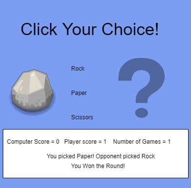
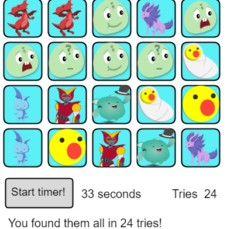

|

|

|

|
On this page, I will be posting some of my Javascripts. I will make sure that I make make this like a portfolio from begginer stuff all the way to the more hardcore stuff.
Original Bitmoji with Javascript
Original dancing bitmoji with Javascript

Original racing bitmoji with Javascript
Resizing bitmoji with Javascript

Dancing bitmoji with parameters

Racing bitmojis with parameters on Javascripts

Decision Tree. Should I buy a new car? (Javascripts)

Bitmoji follows my mouse! Written on Javascripts

Bitmoji Line using loops! Written on Javascripts
Multiplication table using for loops! Useful for math.
Dry Bitmoji. Bitmoji stays dry on a wicked rain storm!
Educational App done with Javascript

Traditional frogger

Rock Paper Scissors! Created by my partner and I!

Memory game How good is your memory?
